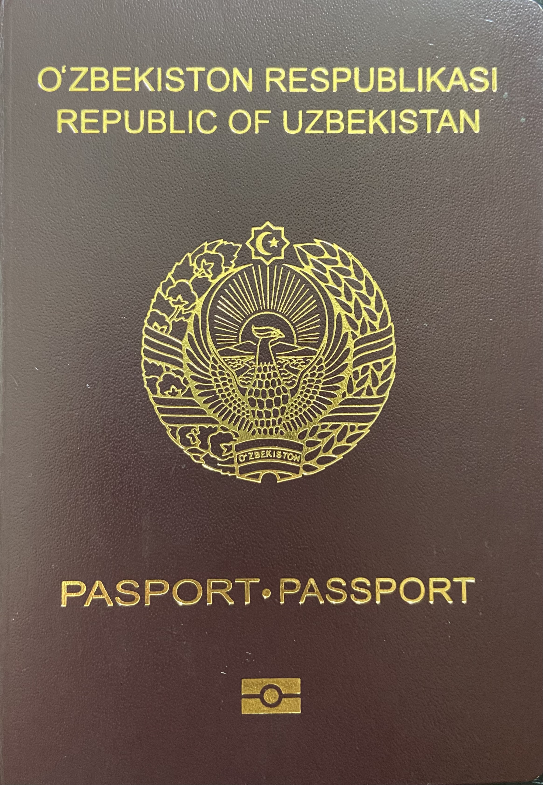

Consular services and passports for Uzbekistanis abroad
For Uzbekistan citizens living or staying abroad, embassies and consular sections are the main point of contact: they issue and renew passports, process documents, register civil-status acts (births, marriages), and provide emergency help. Most services first require being on the consular register. The biometric passport dates from 2011, the red international biometric passport from 1 January 2019; from 2021 the ID card is used domestically. The exit-permission sticker was abolished on 1 January 2019. Based on official sources.

For Uzbekistan citizens living or temporarily staying abroad, the main link to the state is the diplomatic missions (embassies) and consular offices. Below, their services and the key passport rules are explained on a facts-only basis, drawing on the official information of the Ministry of Foreign Affairs and the missions.
What consular offices do
Consular sections at embassies and separate consulates protect citizens' rights and interests abroad; issue and renew biometric passports and travel documents; register civil-status acts (birth, marriage, death); perform powers of attorney, document legalization and notarial acts; and place citizens on the consular register.
The consular register
Most services first require the citizen to be on the consular register. Those permanently residing abroad are placed on the permanent register; those staying temporarily on the temporary register. Registration is needed for contact in emergencies, for notifications, and to use other consular services.
The biometric passport
Uzbekistan introduced the biometric passport gradually from January 2011; the new red (burgundy) international biometric passport has been issued since 1 January 2019. From 1 January 2021 the biometric ID card became mandatory for domestic use, while the passport is used only for international travel. Validity: 5 years for those under 25 and 10 years for those over 25.
Getting or renewing a passport abroad
To obtain or renew a passport abroad, you apply to the nearest mission or consulate by appointment; the citizen must be on the permanent or temporary consular register, otherwise they register first. Children come accompanied by a parent (or one of them). Applications filed abroad take longer than at home — usually one to three months.
Exit permission abolished (2019)
From 1 January 2019 Uzbekistan fully abolished the Soviet-era exit-permission (sticker) system for travel abroad. Citizens now travel abroad freely with a valid biometric passport — no separate exit visa is required.
Emergencies — the certificate of return
If a citizen loses their passport abroad, has it stolen, or has no valid passport, the consular office issues a one-time 'certificate of return' to travel home. This document is valid only for returning to Uzbekistan.
Dual citizenship is not recognized
Uzbekistan does not recognize dual citizenship: a person who acquires another country's citizenship remains, in Uzbekistan's view, its citizen unless they have renounced Uzbek citizenship through the procedure set by law. See our separate article on citizenship and dual citizenship for details.